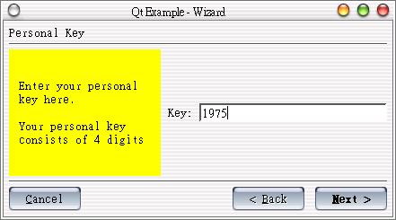
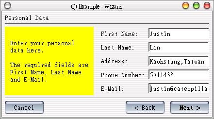

在應用程式安裝或是使用者註冊時，我們可以提供使用者「精靈」（Wizard）進行一些選項設定與資訊填寫，在Step by Step的過程中，提示使用者完成所有必要的選項設定或資訊填寫，精靈的功能我們可以使用QWizard類別撰寫。
在Qt的線上範例中，有一個wizard程式示範了QWizard類別的使用，該程式一步一步提供使用者填寫註冊碼與使用者資訊，精靈主要有三個頁面，程
式中的setupPage1()、setupPage2()、setupPage3()三個方法成員主要負責這三個頁面的版面配置。
精靈的使用有一個很重要的就是驗證使用者的輸入在格式上是否正確，如果使用者的填寫不正確或資訊尚未填寫完畢，「下一步」（next）的按鈕就必須處於失
效狀態，這可以使用setNextEnabled()方法來設定，而精靈的最後一個頁面則由按鈕finishButton()->
setEnabled()方法來控制。
在Qt的線上範例中，使用者的資料驗證主要由下面這兩個Slots來進行，它們會在文字欄位改變時被呼叫執行：
void Wizard::keyChanged( const QString &text )
{
QString t = text;
int p = 0;
bool on = ( key->validator()->validate(t, p) == QValidator::Acceptable );
nextButton()->setEnabled( on );
}
void Wizard::dataChanged( const QString & )
{
if ( !firstName->text().isEmpty() &&
!lastName->text().isEmpty() &&
!email->text().isEmpty() )
nextButton()->setEnabled( TRUE );
else
nextButton()->setEnabled( FALSE );
}
Qt的這個範例雖然長，但重要的程式碼就是上面這些了，其它的程式碼都是在設定精靈的三個頁面的版面，沒什麼特別困難之處，以下列出完整的程式碼，首先是wizard.h：
#ifndef WIZARD_H
#define WIZARD_H
#include <qwizard.h>
class QWidget;
class QHBox;
class QLineEdit;
class QLabel;
class Wizard : public QWizard
{
Q_OBJECT
public:
Wizard( QWidget *parent = 0, const char *name = 0 );
void showPage(QWidget* page);
protected:
void setupPage1();
void setupPage2();
void setupPage3();
QHBox *page1, *page2, *page3;
QLineEdit *key, *firstName, *lastName, *address, *phone, *email;
QLabel *lKey, *lFirstName, *lLastName, *lAddress, *lPhone, *lEmail;
protected slots:
void keyChanged( const QString & );
void dataChanged( const QString & );
};
#endif
再來是wizard.cpp：
#include "wizard.h"
#include <qwidget.h>
#include <qhbox.h>
#include <qvbox.h>
#include <qlabel.h>
#include <qlineedit.h>
#include <qpushbutton.h>
#include <qvalidator.h>
#include <qapplication.h>
Wizard::Wizard( QWidget *parent, const char *name )
: QWizard( parent, name, TRUE )
{
setupPage1();
setupPage2();
setupPage3();
key->setFocus();
}
void Wizard::setupPage1()
{
page1 = new QHBox( this );
page1->setSpacing(8);
QLabel *info = new QLabel( page1 );
info->setMargin( 11 );
info->setPalette( yellow );
info->setText( "Enter your personal\n"
"key here.\n\n"
"Your personal key\n"
"consists of 4 digits" );
info->setMaximumWidth( info->sizeHint().width() );
QVBox *page = new QVBox( page1 );
QHBox *row1 = new QHBox( page );
(void)new QLabel( "Key:", row1 );
key = new QLineEdit( row1 );
key->setMaxLength( 4 );
key->setValidator( new QIntValidator( 1000, 9999, key ) );
connect( key, SIGNAL( textChanged( const QString & ) ),
this, SLOT( keyChanged( const QString & ) ) );
addPage( page1, "Personal Key" );
setNextEnabled( page1, FALSE );
setHelpEnabled( page1, FALSE );
}
void Wizard::setupPage2()
{
page2 = new QHBox( this );
page2->setSpacing(8);
QLabel *info = new QLabel( page2 );
info->setMargin( 11 );
info->setPalette( yellow );
info->setText( "\n"
"Enter your personal\n"
"data here.\n\n"
"The required fields are\n"
"First Name, Last Name \n"
"and E-Mail.\n" );
info->setMaximumWidth( info->sizeHint().width() );
QVBox *page = new QVBox( page2 );
QHBox *row1 = new QHBox( page );
QHBox *row2 = new QHBox( page );
QHBox *row3 = new QHBox( page );
QHBox *row4 = new QHBox( page );
QHBox *row5 = new QHBox( page );
QLabel *label1 = new QLabel( " First Name: ", row1 );
label1->setAlignment( Qt::AlignVCenter );
QLabel *label2 = new QLabel( " Last Name: ", row2 );
label2->setAlignment( Qt::AlignVCenter );
QLabel *label3 = new QLabel( " Address: ", row3 );
label3->setAlignment( Qt::AlignVCenter );
QLabel *label4 = new QLabel( " Phone Number: ", row4 );
label4->setAlignment( Qt::AlignVCenter );
QLabel *label5 = new QLabel( " E-Mail: ", row5 );
label5->setAlignment( Qt::AlignVCenter );
label1->setMinimumWidth( label4->sizeHint().width() );
label2->setMinimumWidth( label4->sizeHint().width() );
label3->setMinimumWidth( label4->sizeHint().width() );
label4->setMinimumWidth( label4->sizeHint().width() );
label5->setMinimumWidth( label4->sizeHint().width() );
firstName = new QLineEdit( row1 );
lastName = new QLineEdit( row2 );
address = new QLineEdit( row3 );
phone = new QLineEdit( row4 );
email = new QLineEdit( row5 );
connect( firstName, SIGNAL( textChanged( const QString & ) ),
this, SLOT( dataChanged( const QString & ) ) );
connect( lastName, SIGNAL( textChanged( const QString & ) ),
this, SLOT( dataChanged( const QString & ) ) );
connect( email, SIGNAL( textChanged( const QString & ) ),
this, SLOT( dataChanged( const QString & ) ) );
addPage( page2, "Personal Data" );
setHelpEnabled( page2, FALSE );
}
void Wizard::setupPage3()
{
page3 = new QHBox( this );
page3->setSpacing(8);
QLabel *info = new QLabel( page3 );
info->setPalette( yellow );
info->setText( "\n"
"Look here to see of\n"
"the data you entered\n"
"is correct. To confirm,\n"
"press the [Finish] button\n"
"else go back to correct\n"
"mistakes." );
info->setMargin( 11 );
info->setAlignment( AlignTop|AlignLeft );
info->setMaximumWidth( info->sizeHint().width() );
QVBox *page = new QVBox( page3 );
QHBox *row1 = new QHBox( page );
QHBox *row2 = new QHBox( page );
QHBox *row3 = new QHBox( page );
QHBox *row4 = new QHBox( page );
QHBox *row5 = new QHBox( page );
QHBox *row6 = new QHBox( page );
QLabel *label1 = new QLabel( " Personal Key: ", row1 );
label1->setAlignment( Qt::AlignVCenter );
QLabel *label2 = new QLabel( " First Name: ", row2 );
label2->setAlignment( Qt::AlignVCenter );
QLabel *label3 = new QLabel( " Last Name: ", row3 );
label3->setAlignment( Qt::AlignVCenter );
QLabel *label4 = new QLabel( " Address: ", row4 );
label4->setAlignment( Qt::AlignVCenter );
QLabel *label5 = new QLabel( " Phone Number: ", row5 );
label5->setAlignment( Qt::AlignVCenter );
QLabel *label6 = new QLabel( " E-Mail: ", row6 );
label6->setAlignment( Qt::AlignVCenter );
label1->setMinimumWidth( label1->sizeHint().width() );
label2->setMinimumWidth( label1->sizeHint().width() );
label3->setMinimumWidth( label1->sizeHint().width() );
label4->setMinimumWidth( label1->sizeHint().width() );
label5->setMinimumWidth( label1->sizeHint().width() );
label6->setMinimumWidth( label1->sizeHint().width() );
lKey = new QLabel( row1 );
lFirstName = new QLabel( row2 );
lLastName = new QLabel( row3 );
lAddress = new QLabel( row4 );
lPhone = new QLabel( row5 );
lEmail = new QLabel( row6 );
addPage( page3, "Finish" );
setFinishEnabled( page3, TRUE );
setHelpEnabled( page3, FALSE );
}
void Wizard::showPage( QWidget* page )
{
if ( page == page1 ) {
} else if ( page == page2 ) {
} else if ( page == page3 ) {
lKey->setText( key->text() );
lFirstName->setText( firstName->text() );
lLastName->setText( lastName->text() );
lAddress->setText( address->text() );
lPhone->setText( phone->text() );
lEmail->setText( email->text() );
}
QWizard::showPage(page);
if ( page == page1 ) {
keyChanged( key->text() );
key->setFocus();
} else if ( page == page2 ) {
dataChanged( firstName->text() );
firstName->setFocus();
} else if ( page == page3 ) {
finishButton()->setEnabled( TRUE );
finishButton()->setFocus();
}
}
void Wizard::keyChanged( const QString &text )
{
QString t = text;
int p = 0;
bool on = ( key->validator()->validate(t, p) == QValidator::Acceptable );
nextButton()->setEnabled( on );
}
void Wizard::dataChanged( const QString & )
{
if ( !firstName->text().isEmpty() &&
!lastName->text().isEmpty() &&
!email->text().isEmpty() )
nextButton()->setEnabled( TRUE );
else
nextButton()->setEnabled( FALSE );
}
最後是main.cpp：
#include "wizard.h"
#include <qapplication.h>
int main(int argc,char **argv)
{
QApplication a(argc,argv);
Wizard wizard;
wizard.setCaption("Qt Example - Wizard");
return wizard.exec();
}
程式執行的畫面如下所示：


|
|